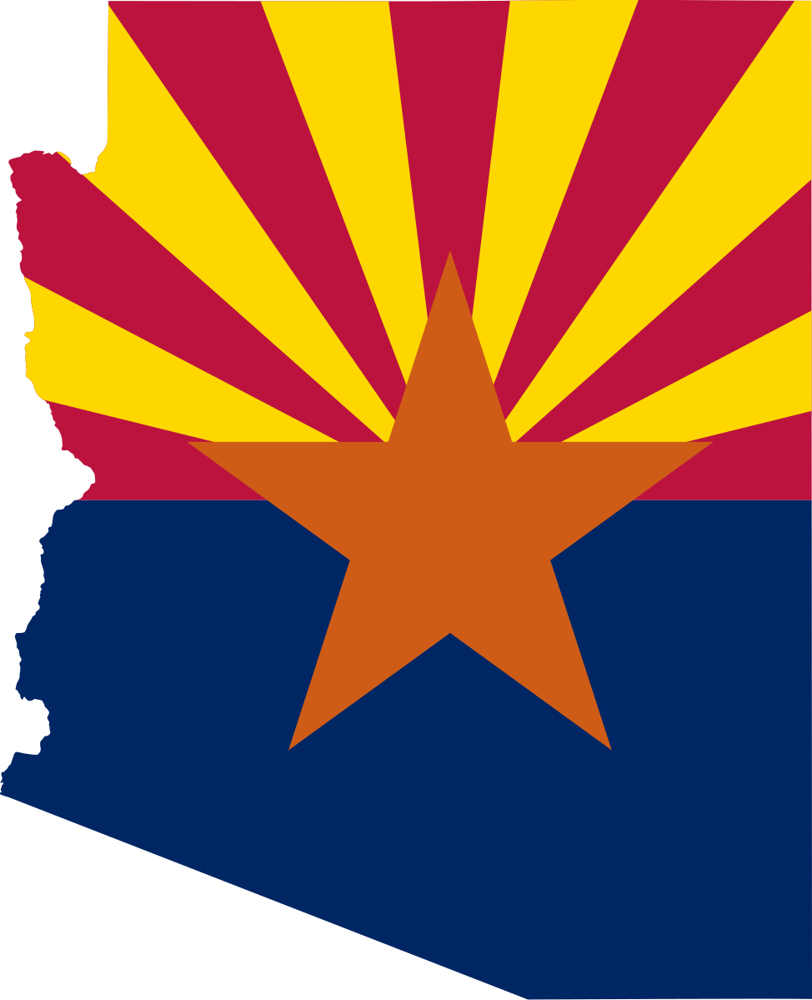

About Me
My name is Gabriel Wilkins and I am from Eagle Mountain, Utah. Currently I work as an Application Engineer, creating full stack applications for my local school district. I am attending BYU-Pathways to attain my degree and get a
Scottsdale Arizona

I served my mission in Scottsdale, Arizona. I was there from the times of 2019 - 2021. I served during Covid which was a trying time, but i got to learn about